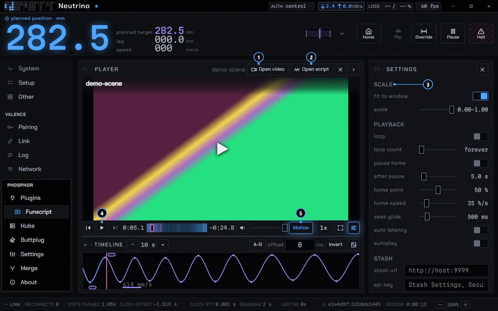
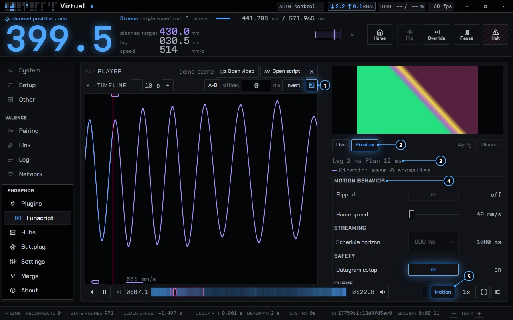

phosphor · docs
Funscript player
The funscript player plays a video or audio file together with its funscript and drives the machine from the script. It reads files from your disk or from a Stash server. It ships with Phosphor as a factory plugin.
Open it
The player lives in the Phosphor app. The page a hub serves from its own flash loads no plugins, so it has no player. In the app the player has two places: a card you can put on the Dash, and a page called Funscript under Plugins in the sidebar. Both are the same player.
The player needs a hub that accepts scheduled motion (a segments stream). On a hub without one, the card and the page stay empty. Playing a script also needs a session at the control tier, since it drives motion. Connecting covers pairing and tiers.
You can turn the player off, or hide its sidebar tab, in the Plugins pane. See Plugins.
Load a video and a script
Open video and Open script work in either order. A video opened after a script attaches to it, and the other way round. Both pickers take several files at once. Files pair by base name, ignoring case:
scene.mp4is the video. Audio files work too: mp3, m4a, aac, ogg, wav, flac, opus.scene.funscriptis the main script. It drives the stroke.scene.v8.funscriptandscene.v9.funscriptare the side files for the oscillator axes.
If you pick several videos at once, the first plays and the rest go to the queue, each with its same-named script.
A script with no video plays against a clock. The stage shows a stroke meter instead of a picture, and fullscreen is grayed.

- Open video loads a video or audio file.
- Open script loads a funscript.
- Scale is in the Settings panel.
- Play starts the video, and the machine too when Motion is on.
- Motion lets Play move the machine.
Side files: V8 and V9
V8 is oscillation amplitude and V9 is oscillation frequency. If the loaded script has either one and the hub has an oscillator input, the player sends them while the main axis plays. They can come from side files or from inside the main file (funscript 1.1 axes, 2.0 channels). A side file wins over the same axis inside the main file. The hub scales each one onto the oscillator's own limits.
Every other axis in the files is ignored, and the status says so, for example Extra axes ignored: roll. On a hub without an oscillator input the status reads This machine has no oscillator input. A side file that fails to read becomes a note in the status. It does not stop the load. A Stash scene serves one file, so it carries embedded axes only.
Bad scripts
A file that is not JSON, has no valid action, or has more than a million actions is refused in words, and Play stays grayed. Fixable problems play and are named in the status: unsorted actions, duplicates, positions outside 0 to 100, invalid actions dropped, very long gaps split. The range field inside a script is ignored. So a messy script usually still plays, and a broken one says why it will not.
Scale
The hub draws the curve between your script's actions and shapes it with its own smoothness setting. A smooth curve can swing past the end of a stroke, and the hub then cuts the stroke at the end of its window. Scale pulls the script in so that does not happen. It is a row in the player's settings.
- Auto is on by default. It reads the whole script, finds how far the machine's own curve would overshoot at each end, and fits to that. A script that overshoots only the top keeps its bottom where it is. The slider is grayed under Auto, and its value shows where the script's 0 and 100 land, for example
0.01–0.97. - Manual is one slider from 0.25 to 1.00. It shrinks the whole script toward the middle of the window, and 1.00 changes nothing. So Manual trades stroke length for headroom, evenly at both ends.
The fit runs in Phosphor because only the client sees the whole script. So the hub never needs to know about it.
Range and invert
The timeline has two range pills that confine the stroke to part of the window, and an Invert switch. They apply on top of Scale.
Sync and latency
The player keeps time by the moment each video frame is shown on screen, not by the video's reported position. That keeps the picture and the stroke on the same instant. Phosphor also resyncs its clock with the hub's every 10 seconds.
Offset
Offset is in the timeline's header row. It runs from −500 to +500 ms in 5 ms steps. A positive value makes the machine move later, a negative one earlier. Zero already includes the latency the hub declares. So you start from the hub's own figure, and the offset is only for the delay you can feel: a slow display, a Bluetooth speaker. A change applies when you release the control, and the schedule restarts once.
Auto latency
Auto latency is off by default and experimental. It compares the hub's plan with what the player sent, takes the median of the last 32 plans, and moves the machine earlier by that much, up to 100 ms. So it can only pull the machine earlier, never push it later, and your offset still applies on top.
Wi-Fi stalls
The player sends motion ahead of time. The hub's schedule horizon is 250, 500 or 1000 ms, and Nucleus ships at 1000 ms. The player sends up to the horizon minus 100 ms ahead, which is 900 ms at the default. At a 250 ms horizon the lead is 150 ms, and at 500 ms it is 400 ms. So on the default a Wi-Fi stall shorter than about 900 ms never reaches the motion, and a hub set to 250 ms rides out only 150.
Playback
Motion sits beside Play. When it is on, Play moves the machine. When it is off, the video plays and nothing is sent. Play is the only thing that starts motion. Previous and next load a video paused, and a touch tap on the video only shows the controls.
Starting and stopping
- If the machine is more than 5 percent of the stroke away from where the script starts, Play first moves it there in one positioning move, then starts the video. The move takes 400 ms plus 1200 ms for a full stroke. So the machine never snaps to the start, and the video waits for it.
- Pause, seeking, a stall, a media error or hiding the page each send one hold. The machine follows the script for up to 200 ms, or to the next action if that comes sooner, and rests. So a stop never leaves it mid-stroke.
- Play grays out with the reason in words:
no hub link,session not authorized,e-stop latched,paused, resume to continue,stop the pattern first,motion input in use by <plugin>. If one of these appears mid-play, the video pauses in the same frame. - Nothing resumes by itself. After a halt clears, Play comes back and waits for you.
- The strip's pause and e-stop work from every tier, including while the video is fullscreen.
Loop, A-B and seek
Loop repeats the whole video. A count of 0 loops forever. The A-B button sets a section: the first press sets A at the playhead, the second sets B and starts the loop, the third clears it. The loop wraps with no gap in the motion. A seek glides the machine to where the script will be 500 ms later by default. The Seek glide row sets it, and 0 jumps. So a seek is one smooth move.
Pause home
Off by default. When on, the machine moves to the home point (the middle of the window by default) after a pause has lasted the set time (5 seconds by default). So a paused video parks the machine at a known spot. Play, a new load or any change to Motion cancels a pending move.
Queue and autoplay
The library column has a Library and a Queue view. Add to queue and Play next are on each row, and a drag reorders. With Autoplay on, the next queued video loads and plays when one ends. A halt, a refusal, any other act of yours between videos, or 10 seconds without the next script cancels the pending start. So a halt released between videos starts nothing.
Rate and speed
Rate runs from 0.5x to 2x. The player does not slow a script down to fit the machine. The hub holds its input speed limit, and the status reads Script past the input speed limit when a script asks for more. So a fast script is held to the machine's limit, not slowed to fit.
Stash
The player can browse a Stash server and play its scenes. Enter the Stash URL and the API key (from Stash under Settings, Security), then press Save and Test. The connect card is in the player's settings and takes the library's place until a URL is set. Phosphor stores the key on your computer and leaves it out of its settings backup.
- The library lists scenes that have a script, as rows with a thumbnail, duration and speed. The Scripted only switch is on by default. Turn it off to list every scene. A scene without a script loads video only.
- Search, and sort by Date, Added, Title, Duration, Plays, Rating or Speed. The list pages instead of scrolling.
- Hover a row to see a small heat strip of the script's speed over time.
- The right-click menu on a row has Play, Play next, Add to queue and Open in Stash.
The video plays from Stash's direct stream, the original file. Whatever codec the file uses has to play in the app's webview. Transcodes are not supported. The player only reads from Stash: it does not write play counts back. It was checked against Stash v0.31.1.
Analyzer
The Graph button (key g) turns the timeline into a tuning bench. The card keeps its size. The video shrinks to a thumbnail and the graph grows. It shows four things:
- The script's actions as dots.
- The curve the machine's own planner draws through them. The player runs Kinetic², the same planner code as the firmware, inside the app, so it costs the hub nothing.
- The hub's actual plan, as a lighter line.
- The measured position, in the reality color.

- Graph turns the timeline into the analyzer.
- Preview applies a change without storing it. Live sits beside it.
- Lag and Plan show how far the machine runs from the script.
- Motion behavior holds the hub's tuning controls.
- Motion stays on while the script plays.
Lag n ms and Plan n ms give the shift, between −100 and 400 ms, that best lays the measured position, and the plan, over the script across the last 8 seconds. They update twice a second. They are a scope, not a calibration. So use them to see whether the machine runs early or late, then set the offset by feel. The Kinetic line reads Kinetic: wasm when the planner is running. If it cannot start, it reads Kinetic: fallback and the curve becomes straight lines between actions.
Below the graph are the hub's tuning controls, smoothness and the speed and acceleration ceilings among them, plus the input limits. They come from whatever the hub's catalog lists. This is why the plugin declares the intent permission. There are two modes:
- Live
- Stores each change as you make it.
- Preview
- Applies a change on the machine without storing it. The status reads
Preview: not saved. Apply stores the values and Discard puts the stored ones back. Preview is the default on a hub that supports it.
The preview planner is an ideal one: it has none of the board's task jitter or edge quantization. It matches the firmware exactly only when the firmware is built from the commit the player pins.
Keyboard and controls
| Input | Does |
|---|---|
Space, k | Play or pause |
j, l | Back or forward 10 s |
←, → | Back or forward 5 s (30 s with Shift on the timeline) |
m | Mute |
g | Open or close the analyzer |
f | Fullscreen, on the Funscript page |
Esc | Leave fullscreen |
| Click on video | Play or pause. A double-click goes fullscreen. |
| Tap on video | Show or hide the controls. It never plays. A double-tap on the left or right third skips 10 s. |
| Right-click, menu key | The stage, timeline, scene and queue menus: Seek here, Set A here, Set B here, Clear loop, Open video, Open script, chapter jumps |
In fullscreen the stop pair floats over the video, and a hover bar carries the player controls. On a phone, turning to landscape with a video loaded enters fullscreen.
How a script action reaches the motor
Once a frame, the player turns the next actions into segments, up to 32 at a time, one per gap between actions. A gap over 500 ms ends in a rest. So a long pause in a script parks the machine instead of creeping. Phosphor stamps each segment with a time on the hub's clock and sends it ahead of that time. The hub plans on a 1 ms grid with Kinetic², renders a 128 ms strip, and the ESP32-P4's LP core emits A/B quadrature to the servo drive under a 4 ms lease. So the player never steps the motor: it hands the hub a schedule and the hub owns the timing. The hub returns motion telemetry at 50 Hz by default. The diagram draws the path.
Status
Not released yet. The player works against the built-in Virtual machine, and the Stash browser has been checked against a real server. Two parts are unfinished:
- Oscillator axes (V8, V9) WIP: the end-to-end check on a hub is still owed. A setting to ignore these axes per scene is not built.
- Auto latency WIP: experimental, off by default.